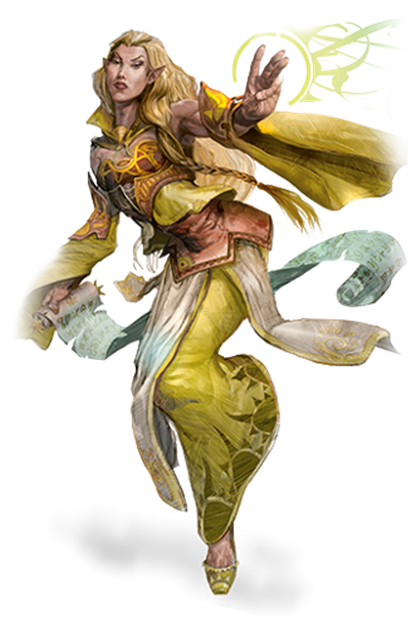
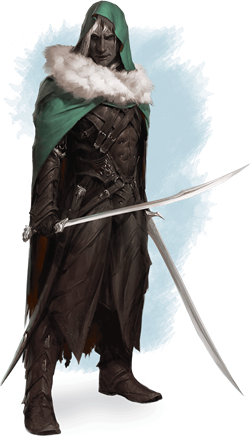

Elfe
Description¶
Les elfes sont un peuple magique avec une grâce sans précédent, vivant dans ce monde sans réellement en faire partie. Ils vivent généralement dans des lieux empreints d'une beauté éthérée, au milieu d'anciennes forêts ou dans des tours argentées rayonnantes de lumière féérique, où de douces musiques et odeurs flottent avec le vent. Les elfes aiment la nature et la magie, l'art, la musique et la poésie, et toutes les belles choses de ce monde.

Élancés et Gracieux¶
Avec leur grâce irréelle et leurs traits fins, les elfes sont merveilleusement beaux pour les humains et les membres de multiples races. Ils sont généralement plus petits que les humains, allant de 1m50 à 1m90. Ils sont cependant bien plus élancés que les humains, ne pesant qu'entre 50 et 70 kg. Les hommes et femmes font à peu près la même taille, et les hommes sont quelque peu plus lourds.
La coloration des elfes englobe l'étendue humaine normale, et l'étend avec des peaux de couleurs bronze, cuivre, et même presque blanche-bleutée, des cheveux verts ou bleus, et des yeux comme des océans d'or ou d'argent fondu. Les elfes n'ont que très peu de pilosité corporelle et/ou faciale. Ils préfèrent un habillement élégant, aux couleurs vives, et apprécient des accessoires simples comme de petites bagues.
Une perspective intemporelle¶
Les elfes peuvent facilement vivre plus de 700 ans, leur donnant une perspective plus large sur des évènements qui pourraient troubler des races à la durée de vie plus courte. Ils sont plus souvent amusés qu'excités, et bien plus enclins à être curieux qu'avare. Ils ont tendance à rester neutre et ne pas être perturbé par les aléas de la vie quotidienne. Cependant, lorsqu'ils sont lancés dans une quête, que ce soit l'aventure ou l'apprentissage d'une nouvelle compétence ou d'un nouvel art, les elfes peuvent être concentré et sans pitié. Ils sont lents à se faire des amis ou des ennemis... et encore plus lents à les oublier. Ils répondent aux insultes avec du dédain, et aux affronts par la vengeance.
Tout comme les branches d'un jeune arbre, les elfes sont flexibles devant le danger. Ils croient en la diplomatie et réalisent des compromis pour arrêter les conflits avant une escalade vers la violence. Ils sont connus pour fuir les intrusions en se réfugiant dans leurs forêts, dans leur espoir de simplement laisser les intrus se lasser et/ou mourir. Néanmoins, lorsque le besoin s'en fait sentir, les elfes révèle un côté martial, montrant une forte maîtrise des épées, des arcs, et de la stratégie.
Sous-races¶
De par différents conflits et/ou décisions passées, le peuple elfe est divisé en sous-races :
| Sous-race | Description |
|---|---|
| Haut-Elfe | Noblesse elfe, habiles en magie |
| Elfe des bois | Plèbe elfe, voyageurs et en communion avec la nature |
| Drow | Elfes noirs, habitants de l'Outreterre |
| Eladrin | Elfes féériques, originairse de la Féerie |
| Elfe des mers | Elfes préférant l'océan à la forêt |
| Shadar-kai | Elfes des ombres |
| Elfe Astral | Elfes ayant quitté les plans matériels pour le Plan Astral |
Culture¶
Royaumes Forestiers Cachés¶
La plupart des elfes vivent dans de petits villages cachés parmi les arbres. Les elfes chassent pour le jeu, récoltent des vivres et font pousser des légumes. Ainsi, leur compétences innées et leur magie leur permet de se sustenter sans devoir nettoyer et entretenir de terrains. Ce sont de talentueux artisans, fabriquant des vêtement finement cousus et des objets d'art. Leurs contacts avec les étrangers sont limités, même si quelques elfes vivent aisément en commerçant les objets fabriqués pour des métaux (puisqu'ils n'ont aucun intérêt pour le minage).
Les elfes rencontrés en dehors de leurs terres sont généralement des artistes ou des sages ambulants. Les nobles humains s'arrache les services d'elfes instructeurs pour apprendre l'escrime ou la magie à leurs enfants.
Exploration et Aventure¶
Les elfes partent à l'aventure par pure quête d'exploration. Puisqu'ils vivent si longtemps, ils peuvent profiter de siècles d'exploration et de découvertes. Ils n'apprécient guère le rythme de la société humaine, qui semble similaire au jour le jour, mais change drastiquement d'une décennie à l'autre, et ils cherchent donc des carrière leur permettant de voyager et de vivre à leur propre rythme. Les elfes aiment utiliser leurs connaissances martiales ou accroître leur pouvoir magique, et aventurer leur permet tout ceci. Certains peuvent rejoindre des rebelles se dressant contre l'oppression, tandis que d'autres peuvent devenir des champions aux causes morales.
Noms¶
Les elfes sont considérés comme des enfants jusqu'à ce qu'ils se déclarent adultes, quelque temps après le centième anniversaire, et avant cette période, ils sont appelés par des noms d'enfant.
Lorsqu'il déclare l'âge adulte, un elfe choisit un nom d'adulte, bien que ceux qui le connaissaient comme un enfant puissent continuer à utiliser le nom de l'enfant. Le nom adulte de chaque elfe est une création unique, même s'il peut s'inspirer de noms d'individus respectés ou d'autres membres de la famille. Il n'y a guère de distinction entre les noms masculins et les noms féminins; les groupements ici ne reflètent que des tendances générales. En outre, chaque elfe porte un nom de famille, typiquement une combinaison d'autres mots elfes. Certains elfes voyageant parmi les humains traduisent leurs noms de famille en Commun, mais d'autres conservent la version Elfique.
Nom d'enfants: Ara, Bryn, Del, Eryn, Faen, Innil, Lael, Mella, Naill, Naeris, Phann, Rael, Rinn, Sai, Syllin, Thia, Vall
Nom d'adultes masculins: Adran, Aelar, Aramil, Arannis, Aust, Beiro, Berrian, Carric, Enialis, Erdan, Erevan, Galinndan, Hadarai, Heian, Himo, Immeral, Ivellios, Laucian, Mindartis, Paelias, Peren, Quarion, Riardon, Rolen, Soveliss, Thamior, Tharivol, Theren, Varis
Nom d'adultes féminins: Adrie, Althaea, Anastrianna, Andraste, Antinua, Bethrynna, Birel, Caelynn, Drusilia, Enna, Felosial, Ielenia, Jelenneth, Keyleth, Leshanna, Lia, Meriele, Mialee, Naivara, Quelenna, Quillathe, Sariel, Shanairra, Shava, Silaqui, Theirastra, Thia, Vadania, Valanthe, Xanaphia
Noms de famille (et traduction en Commun): Amakiir (Gemmefleur), Amastacia (Fleurétoile), Galanodel (Murmurelune), Holimion (Roséediamant), Ilphelkiir (Geméclot), Liadon (Fougèrargent), Meliamne (Talonchêne), Naïlo (Ventnocturne), Siannodel (Ruisseaulune), Xiloscient (Pétalor)
Langue¶
Haut-elfe¶
Description¶
En tant que haut-elfe, vous avez un esprit vif et une maîtrise d'au moins les bases de la magie. Il y a deux sortes de haut-elfe. Certains sont hautains et reclus, se croyant supérieurs aux non-elfes et même aux autres elfes. On les appelle les elfes du soleil. Les autres sont plus communs et plus respectueux, et souvent rencontrés parmi les humains et d'autres races. Ceux-là sont connus comme les elfes de la lune.
Les elfes du soleil ont une peau couleur bronze, et des cheveux cuivré, noir, ou doré. Leurs yeux sont d'or, d'argent ou noirs. Les elfes de la lune sont beaucoup plus pâles, avec une peau albâtre parfois teintée de bleu. Ils ont souvent des cheveux blanc-argentés, mais des chevelures plutôt blondes, châtaines, et même rousses ne sont pas rares. Leurs yeux sont bleus ou verts, parsemés d'or.
Mécaniques¶
Augmentation de caractéristiques. Quand vous déterminez les caractéristiques de votre personnage, augmentez l'une de ces caractéristiques par 2 et augmentez une autre par 1, ou augmentez trois caractéristiques différentes par 1. (Conseillé : DEX +2, INT +1)
Type de Créature. Vous êtes un humanoïde.
Langage. Vous parlez le Commun et l'Elfique. L'Elfique est fluide, avec de subtiles intonations et une grammaire complexe. La littérature elfique est riche et variée, et leurs chansons et poèmes sont connus même des autres races. Beaucoup de bardes apprennent ce langage afin de pouvoir ajouter les ballades elfes à leur répertoire.
Âge. Bien que les elfes atteignent la maturité physique à peu près au même âge que les humains, pour les elfes la définition de l'âge adulte dépend plus de l'expérience que l'on peut avoir du monde que de la croissance physique. Un elfe prétend généralement à l'âge adulte et à un nom d'adulte aux alentours de ses 100 ans et peut vivre jusqu'à 750 ans.
Taille. Les elfes mesurent entre 1m50 et 1m80 et sont élancés. Votre taille est Moyenne (M).
Vitesse. Votre vitesse de base est de 30 ft. (9m/6 cases).
Vision dans le noir. Habitué à la vie dans de denses forêts et au ciel nocturne, vous avez une vision supérieure dans l'obscurité et la lumière faible. Vous pouvez voir à 60 ft. (18m/12 cases) dans une zone de lumière faible comme vous verriez avec une lumière vive, et dans le noir comme avec une lumière faible. Vous ne pouvez pas discerner les couleurs dans l'obscurité, seulement les nuances de gris.
Sens Aiguisés. Vous maîtrisez la compétence Perception.
Ascendance Féérique. Vous avez l'avantage aux jets de sauvegarde contre les effets de charme et la magie ne peut pas vous endormir.
Transe. Les elfes n'ont pas besoin de dormir. Au lieu de cela, ils méditent profondément, restant à demi conscients, 4 heures par jour (le mot usuel pour désigner cette méditation est « transe »). En méditant, vous pouvez rêver, tant bien que mal ; ces rêves sont en fait des exercices mentaux qui deviennent un réflexe après des années de pratique. Après un repos de ce type, vous obtenez les mêmes avantages qu'un humain après 8 heures de sommeil.
Entraînement aux Armes Elfes. Vous avez la maîtrise avec l'épée longue, l'épée courte, l'arc court et l'arc long.
Cantrip. Vous connaissez un cantrip de votre choix de la liste du magicien. L'intelligence est votre caractéristique de lancement pour ce sort.
Langue Supplémentaire. Vous connaissez une langue supplémentaire de votre choix.
Elfe des bois¶
Description¶
En tant qu'elfe des bois, vous avez des sens aigus et de l'intuition, et vos pieds agiles vous permettent de naviguer rapidement et furtivement à travers vos forêts indigènes. Les elfes de bois (également appelés elfes sauvages, elfes verts ou elfes forestiers) sont reclus et méfiants des non-elfes.
La peau des elfes des bois a tendance à être cuivrée en teinte, parfois avec des traces de vert. Leurs cheveux tendent vers les bruns et les noirs, mais ils sont parfois blonds ou de couleur cuivre. Leurs yeux sont verts, bruns ou noisettes.
Mécaniques¶
Augmentation de caractéristiques. Quand vous déterminez les caractéristiques de votre personnage, augmentez l'une de ces caractéristiques par 2 et augmentez une autre par 1, ou augmentez trois caractéristiques différentes par 1. (Conseillé : DEX +2, SAG +1)
Type de Créature. Vous êtes un humanoïde.
Langage. Vous parlez le Commun et l'Elfique. L'Elfique est fluide, avec de subtiles intonations et une grammaire complexe. La littérature elfique est riche et variée, et leurs chansons et poèmes sont connus même des autres races. Beaucoup de bardes apprennent ce langage afin de pouvoir ajouter les ballades elfes à leur répertoire.
Âge. Bien que les elfes atteignent la maturité physique à peu près au même âge que les humains, pour les elfes la définition de l'âge adulte dépend plus de l'expérience que l'on peut avoir du monde que de la croissance physique. Un elfe prétend généralement à l'âge adulte et à un nom d'adulte aux alentours de ses 100 ans et peut vivre jusqu'à 750 ans.
Taille. Les elfes mesurent entre 1m50 et 1m80 et sont élancés. Votre taille est Moyenne (M).
Vitesse. Votre vitesse de base est de 35 ft. (10.5m/7 cases).
Vision dans le noir. Habitué à la vie dans de denses forêts et au ciel nocturne, vous avez une vision supérieure dans l'obscurité et la lumière faible. Vous pouvez voir à 60 ft. (18m/12 cases) dans une zone de lumière faible comme vous verriez avec une lumière vive, et dans le noir comme avec une lumière faible. Vous ne pouvez pas discerner les couleurs dans l'obscurité, seulement les nuances de gris.
Sens Aiguisés. Vous maîtrisez la compétence Perception.
Ascendance Féérique. Vous avez l'avantage aux jets de sauvegarde contre les effets de charme et la magie ne peut pas vous endormir.
Transe. Les elfes n'ont pas besoin de dormir. Au lieu de cela, ils méditent profondément, restant à demi conscients, 4 heures par jour (le mot usuel pour désigner cette méditation est « transe »). En méditant, vous pouvez rêver, tant bien que mal ; ces rêves sont en fait des exercices mentaux qui deviennent un réflexe après des années de pratique. Après un repos de ce type, vous obtenez les mêmes avantages qu'un humain après 8 heures de sommeil.
Entraînement aux Armes Elfes. Vous avez la maîtrise avec l'épée longue, l'épée courte, l'arc court et l'arc long.
Cachette Naturelle. Vous pouvez tenter de vous cacher dans une zone à visibilité réduite, comme en présence de branchages, de forte pluie, de neige qui tombe, de brume ou autre phénomène naturel.
Drow¶
Description¶
En tant que Drow, vous êtes infusé de la magie de l'Outre-Terre, un royaume souterrain de merveilles et d'horreurs rarement vues à la surface. Vous vous sentez chez vous dans l'ombre et, grâce à votre magie innée, savez évoquer à la fois la lumière et l'obscurité. Votre peuple a tendance à avoir des cheveux blancs et une peau grisâtre aux teintes variées.

Mécaniques¶
Augmentation de caractéristiques. Quand vous déterminez les caractéristiques de votre personnage, augmentez l'une de ces caractéristiques par 2 et augmentez une autre par 1, ou augmentez trois caractéristiques différentes par 1. (Conseillé : DEX +2, INT +1)
Type de Créature. Vous êtes un humanoïde.
Langage. Vous parlez l'Outre-Commun et l'Elfique. L'Elfique est fluide, avec de subtiles intonations et une grammaire complexe. La littérature elfique est riche et variée, et leurs chansons et poèmes sont connus même des autres races. Beaucoup de bardes apprennent ce langage afin de pouvoir ajouter les ballades elfes à leur répertoire.
Âge. Bien que les elfes atteignent la maturité physique à peu près au même âge que les humains, pour les elfes la définition de l'âge adulte dépend plus de l'expérience que l'on peut avoir du monde que de la croissance physique. Un elfe prétend généralement à l'âge adulte et à un nom d'adulte aux alentours de ses 100 ans et peut vivre jusqu'à 750 ans.
Taille. Les elfes mesurent entre 1m50 et 1m80 et sont élancés. Votre taille est Moyenne (M).
Vitesse. Votre vitesse de base est de 30 ft. (9m/6 cases).
Vision dans le noir. Habitué à la vie dans de denses forêts et au ciel nocturne, vous avez une vision supérieure dans l'obscurité et la lumière faible. Vous pouvez voir à 120 ft. (36m/24 cases) dans une zone de lumière faible comme vous verriez avec une lumière vive, et dans le noir comme avec une lumière faible. Vous ne pouvez pas discerner les couleurs dans l'obscurité, seulement les nuances de gris.
Sens Aiguisés. Vous maîtrisez la compétence Perception.
Ascendance Féérique. Vous avez l'avantage aux jets de sauvegarde contre les effets de charme et la magie ne peut pas vous endormir.
Transe. Les elfes n'ont pas besoin de dormir. Au lieu de cela, ils méditent profondément, restant à demi conscients, 4 heures par jour (le mot usuel pour désigner cette méditation est « transe »). En méditant, vous pouvez rêver, tant bien que mal ; ces rêves sont en fait des exercices mentaux qui deviennent un réflexe après des années de pratique. Après un repos de ce type, vous obtenez les mêmes avantages qu'un humain après 8 heures de sommeil.
Sensibilité au Soleil. Vous avez un désavantage aux jets d'attaque et aux jets de Sagesse (Perception) basés sur la vue quand vous, la cible de l'attaque ou ce que vous essayez de détecter est exposé à la lumière naturelle.
Magie Drow. Vous connaissez le cantrip Lumières Dansantes. Lorsque vous atteignez le niveau 3, vous pouvez lancer le sort Lueurs Féériques une fois avec ce trait et regagnez cette capacité lorsque vous terminez un repos long. Lorsque vous atteignez le niveau 5, vous pouvez lancer le sort ténèbres une fois avec ce trait et regagnez cette capacité lorsque vous terminez un repos long. Le Charisme est votre caractéristique d'incantation pour ces sorts.
Entraînement aux Armes Drow. Vous obtenez la maîtrise des rapières, des épées courtes, et des arbalètes de poing.
Eladrin¶
Description¶
Les eladrins sont des elfes de la Féerie, un royaume à la beauté dangereuse et à la magie sans limite. En utilisant cette magie, les eladrins sont capables de se déplacer d'un endroit à un autre en un instant, et en chaque eladrin résonnent les émotions capturées par la Féerie sous la forme de saisons -- des affinités qui agissent sur les humeurs et l'apparence des eladrins. La saison d'un eladrin peut changer, même si certains préfèrent conserver la même à vie. Choisissez votre saison ou tirez dans la table des saisons ci-dessous.
Saisons Eladrin¶
| d4 | Saison |
|---|---|
| 1 | Automne : paix et volonté, lorsque la récolte de l'été est partagée avec tous |
| 2 | Hiver : contemplation et candeur, lorsque l'énergie vibrante du monde s'endort |
| 3 | Printemps : joie et fête, marquée par la gaieté et l'espoir que la morosité de l'hiver passe |
| 4 | Été : audace et agression, un moment d'énergie sans limite et d'action |
Mécaniques¶
Augmentation de caractéristiques. Quand vous déterminez les caractéristiques de votre personnages, augmentez l'une de ces caractéristiques par 2 et augmentez une autre par 1, ou augmentez trois caractéristiques différentes par 1. (Conseillé : DEX +2, SAG +1)
Type de Créature. Vous êtes un humanoïde.
Langage. Vous parlez le Commun et l'Elfique. L'Elfique est fluide, avec de subtiles intonations et une grammaire complexe. La littérature elfique est riche et variée, et leurs chansons et poèmes sont connus même des autres races. Beaucoup de bardes apprennent ce langage afin de pouvoir ajouter les ballades elfes à leur répertoire.
Âge. Bien que les elfes atteignent la maturité physique à peu près au même âge que les humains, pour les elfes la définition de l'âge adulte dépend plus de l'expérience que l'on peut avoir du monde que de la croissance physique. Un elfe prétend généralement à l'âge adulte et à un nom d'adulte aux alentours de ses 100 ans et peut vivre jusqu'à 750 ans.
Taille. Les elfes mesurent entre 1m50 et 1m80 et sont élancés. Votre taille est Moyenne (M).
Vitesse. Votre vitesse de base est de 30 ft. (9m/6 cases).
Vision dans le noir. Habitué à la vie dans de denses forêts et au ciel nocturne, vous avez une vision supérieure dans l'obscurité et la lumière faible. Vous pouvez voir à 60 ft. (18m/12 cases) dans une zone de lumière faible comme vous verriez avec une lumière vive, et dans le noir comme avec une lumière faible. Vous ne pouvez pas discerner les couleurs dans l'obscurité, seulement les nuances de gris.
Sens Aiguisés. Vous maîtrisez la compétence Perception.
Ascendance Féérique. Vous avez l'avantage aux jets de sauvegarde contre les effets de charme et la magie ne peut pas vous endormir.
Transe. Les elfes n'ont pas besoin de dormir. Au lieu de cela, ils méditent profondément, restant à demi conscients, 4 heures par jour (le mot usuel pour désigner cette méditation est « transe »). En méditant, vous pouvez rêver, tant bien que mal ; ces rêves sont en fait des exercices mentaux qui deviennent un réflexe après des années de pratique. Après un repos de ce type, vous obtenez les mêmes avantages qu'un humain après 8 heures de sommeil. De plus, lorsque vous sortez d'une transe, vous pouvez changer votre saison, et vous gagnez deux maîtrises d'arme ou d'outil que vous n'avez pas. Vous obtenez ces maîtrises mystiquement en tirant dans la mémoire elfe partagée, et vous les conservez jusqu'à votre prochain repos long.
Pas de Fée. Pour une action bonus, vous pouvez magiquement vous téléporter jusqu'à 30 ft. (9m/6 cases) sur un espace inoccupé que pouvez voir. Vous pouvez utiliser ce trait un nombre de fois égal à votre bonus de maîtrise, et vous récupérez les utilisations dépensée quand vous finissez un repos long.
À partir du niveau 3, votre Pas de Fée gagne un effet additionnel basé sur votre saison; si l'effet nécessite un jet de sauvegarde, le DC est 8 + Prof. + (Int. ou Wis. ou Cha.) mod :
-
Automne. Immédiatement après avoir utilisé votre Pas de Fée, choisissez jusqu'à deux créature que vous pouvez voir à moins de 10 ft. (3m/2 cases). Elles doivent réussir un jet de sauvegarde de Sagesse ou être charmées par vous pendant 1 minute, ou jusqu'à ce que vous ou vos compagnons leur infligent des dégâts.
-
Hiver. Quand vous utilisez votre Pas de Fée, choisissez une créature que vous pouvez voir à moins de 10 ft. (3m/2 cases). Elle doit réussir un jet de sauvegarde de Sagesse ou être apeurée par vous jusqu'au début de votre prochain tour.
-
Printemps. Quand vous utilisez votre Pas de Fée, vous pouvez toucher une créature volontaire et adjacente. Cette créature se téléporte à votre place, réapparaissant à un emplacement inoccupé de votre choix que vous pouvez voir à moins de 30 ft. (9m/6 cases).
-
Été. Immédiatement après avoir utilisé votre Pas de Fée, chaque créature que vous choisissez que vous pouvez voir à moins de 5 ft. (1.5m/1 case) de vous prend des dégâts de feu égaux à votre bonus de maîtrise.
Elfe des mers¶
Description¶
Les elfes des mers sont tombés amoureux de la beauté sauvage des océans au premiers jours du multivers. Tandis que les autres elfes ont voyagé de plan en plan, les elfes des mers ont navigué les courants et exploré d'une multitude de mondes. Aujourd'hui, ces elfes peuvent être trouvés partout où se trouvent des océans, ainsi que sur le Plan Élémentaire de l'Eau.

Mécaniques¶
Augmentation de caractéristiques. Quand vous déterminez les caractéristiques de votre personnage, augmentez l'une de ces caractéristiques par 2 et augmentez une autre par 1, ou augmentez trois caractéristiques différentes par 1. (Conseillé : DEX +2, CON +1)
Type de Créature. Vous êtes un humanoïde.
Langage. Vous parlez l'Aquatique et l'Elfique. L'Elfique est fluide, avec de subtiles intonations et une grammaire complexe. La littérature elfique est riche et variée, et leurs chansons et poèmes sont connus même des autres races. Beaucoup de bardes apprennent ce langage afin de pouvoir ajouter les ballades elfes à leur répertoire.
Âge. Bien que les elfes atteignent la maturité physique à peu près au même âge que les humains, pour les elfes la définition de l'âge adulte dépend plus de l'expérience que l'on peut avoir du monde que de la croissance physique. Un elfe prétend généralement à l'âge adulte et à un nom d'adulte aux alentours de ses 100 ans et peut vivre jusqu'à 750 ans.
Taille. Les elfes mesurent entre 1m50 et 1m80 et sont élancés. Votre taille est Moyenne (M).
Vitesse. Votre vitesse de base est de 30 ft. (9m/6 cases). Vous avez une vitesse de nage égale à votre vitesse de base.
Vision dans le noir. Habitué à la vie dans de denses forêts et au ciel nocturne, vous avez une vision supérieure dans l'obscurité et la lumière faible. Vous pouvez voir à 60 ft. (18m/12 cases) dans une zone de lumière faible comme vous verriez avec une lumière vive, et dans le noir comme avec une lumière faible. Vous ne pouvez pas discerner les couleurs dans l'obscurité, seulement les nuances de gris.
Sens Aiguisés. Vous maîtrisez la compétence Perception.
Ascendance Féérique. Vous avez l'avantage aux jets de sauvegarde contre les effets de charme et la magie ne peut pas vous endormir.
Transe. Les elfes n'ont pas besoin de dormir. Au lieu de cela, ils méditent profondément, restant à demi conscients, 4 heures par jour (le mot usuel pour désigner cette méditation est « transe »). En méditant, vous pouvez rêver, tant bien que mal ; ces rêves sont en fait des exercices mentaux qui deviennent un réflexe après des années de pratique. Après un repos de ce type, vous obtenez les mêmes avantages qu'un humain après 8 heures de sommeil.
Enfant de la Mer. Vous pouvez respirez dans et en dehors de l'eau, et vous avez la résistance aux dégâts de froid.
Ami de la Mer. Les animaux aquatiques ont une grande affinité avec votre peuple. Vous pouvez communiquer des idées simples à n'importe quelle Bête qui a une vitesse de nage. Elle peut vous comprendre, mais vous n'avez aucun moyen de les comprendre en retour.
Shadar-kai¶
Description¶
Les shadars-kai sont des elfes de la Gisombre, attiré sur ce plan par la Reine Corbeau. À travers les siècles, certains la servent toujours, tandis que d'autres se sont aventurés sur le Plan Matériel pour forger leurs propres destinées.
Les shadars-kai étaient auparavant des Fées comme le reste des elfes, mais n'existent désormais que dans un état entre la vie et la mort, ayant été transformés par l'énergie sombre de la Gisombre.
Les shadars-kai ont des peaux cendrées, et tant qu'ils se trouvent dans la Gisombre, ils sont aussi flétri, reflétant la nature sombre de ce sinistre plan.
Mécaniques¶
Augmentation de caractéristiques. Quand vous déterminez les caractéristiques de votre personnage, augmentez l'une de ces caractéristiques par 2 et augmentez une autre par 1, ou augmentez trois caractéristiques différentes par 1. (Conseillé : DEX +2, CHA +1)
Type de Créature. Vous êtes un humanoïde.
Langage. Vous parlez l'Ombre-Commun et l'Elfique.
Âge. Bien que les elfes atteignent la maturité physique à peu près au même âge que les humains, pour les elfes la définition de l'âge adulte dépend plus de l'expérience que l'on peut avoir du monde que de la croissance physique. Un elfe prétend généralement à l'âge adulte et à un nom d'adulte aux alentours de ses 100 ans et peut vivre jusqu'à 750 ans.
Taille. Les elfes mesurent entre 1m50 et 1m80 et sont élancés. Votre taille est Moyenne (M).
Vitesse. Votre vitesse de base est de 30 ft. (9m/6 cases).
Vision dans le noir. Habitué à la vie dans de denses forêts et au ciel nocturne, vous avez une vision supérieure dans l'obscurité et la lumière faible. Vous pouvez voir à 60 ft. (18m/12 cases) dans une zone de lumière faible comme vous verriez avec une lumière vive, et dans le noir comme avec une lumière faible. Vous ne pouvez pas discerner les couleurs dans l'obscurité, seulement les nuances de gris.
Sens Aiguisés. Vous maîtrisez la compétence Perception.
Ascendance Féérique. Vous avez l'avantage aux jets de sauvegarde contre les effets de charme et la magie ne peut pas vous endormir.
Transe. Les elfes n'ont pas besoin de dormir. Au lieu de cela, ils méditent profondément, restant à demi conscients, 4 heures par jour (le mot usuel pour désigner cette méditation est « transe »). En méditant, vous pouvez rêver, tant bien que mal ; ces rêves sont en fait des exercices mentaux qui deviennent un réflexe après des années de pratique. Après un repos de ce type, vous obtenez les mêmes avantages qu'un humain après 8 heures de sommeil.
Résistance Nécrotique. Vous avez la résistance aux dégâts nécrotiques.
Bénédiction de la Reine Corbeau. En utilisant une action bonus, vous pouvez magiquement vous téléporter jusqu'à 30 ft. (9m/6 cases) sur un emplacement que vous pouvez voir. Vous pouvez utiliser ce trait un nombre de fois égal à votre bonus de maîtrise, et vous récupérez toutes les utilisations dépensées lorsque vous finissez un repos long.
À partir du niveau 3, vous gagnez également la résistance à tous les dégâts lorsque vous vous téléportez en utilisant ce trait. Cette résistance persiste jusqu'au début de votre prochain tour. Pendant ce temps, vous êtes translucide et fantomatique.
Elfe Astral¶
Description¶
Il y a longtemps, un groupe d'elfes s'est échappé de la Féerie pour s'aventurer dans le Plan Astral afin d'être plus proche de leurs dieux. La vie dans le Vide Argenté a insufflé leurs âmes d'une étincelle divine. Cette lumière se manifeste comme un reflet étoilé dans les yeux d'un elfe astral.
Puisque rien ne vieillit dans le Plan Astral, les elfes astraux qui habitent ce plan peuvent être très âgé, et leur longévité leur donne une perspective toute particulière sur le passage du temps. Certains sont enclins à la mélancolie, tandis que d'autres ignorent tout sentiment. Beaucoup recherchent des façons de plus en plus créatives pour s'occuper. Qu'ils vivent en méditation silencieuse, ou dans une éternelle aventure pour explorer les confins du multivers, les elfes astraux tendent à penser qu'analyser les choses à travers le prisme du temps n'a aucun intérêt. Les elfes astraux qui ne s'attardent pas sur le Plan Astral peuvent vivre jusqu'à 750 ans.
Mécaniques¶
Augmentation de caractéristiques. Quand vous déterminez les caractéristiques de votre personnage, augmentez l'une de ces caractéristiques par 2 et augmentez une autre par 1, ou augmentez trois caractéristiques différentes par 1. (Conseillé : DEX +2, INT +1)
Type de Créature. Vous êtes un humanoïde.
Langage. Vous parlez le Commun et l'Elfique.
Âge. Bien que les elfes atteignent la maturité physique à peu près au même âge que les humains, pour les elfes la définition de l'âge adulte dépend plus de l'expérience que l'on peut avoir du monde que de la croissance physique. Un elfe prétend généralement à l'âge adulte et à un nom d'adulte aux alentours de ses 100 ans et peut vivre jusqu'à 750 ans.
Taille. Les elfes astraux mesurent entre 1m50 et 1m80 et sont élancés. Votre taille est Moyenne (M).
Vitesse. Votre vitesse de base est de 30 ft.
Vision dans le noir. Vous pouvez voir à 60 ft. (18m/12 cases) dans une zone de lumière faible comme vous verriez avec une lumière vive, et dans le noir comme avec une lumière faible. Vous ne pouvez pas discerner les couleurs dans l'obscurité, seulement les nuances de gris.
Sens Aiguisés. Vous maîtrisez la compétence Perception.
Ascendance Féérique. Vous avez l'avantage aux jets de sauvegarde contre les effets de charme et la magie ne peut pas vous endormir.
Transe Astrale. Vous n'avez pas besoin de dormir. Au lieu de cela, vous méditez profondément, restant à demi conscients, 4 heures par jour (le mot usuel pour désigner cette méditation est « transe »). Après un repos de ce type, vous obtenez les mêmes avantages qu'un humain après 8 heures de sommeil. À chaque fois que vous finissez cette transe, vous maîtrisez un compétence de votre choix, ainsi qu'une arme ou un outil de votre choix. Vous possédez ces maîtrises magiquement en puisant dans la mémoire partagée elfe du Plan Astral, et vous les gardez jusqu'à ce que vous finissiez votre prochain repos long.
Feu Astral. Vous connaissez l'un des cantrips suivants de votre choix : Lumières Dansantes, Lumière, ou Flamme Sacrée. La caractéristique d'incantation pour ce sort est, au choix, l'Intelligence, la Sagesse, ou le Charisme.
Pas d'Étoile. En utilisant une action bonus, vous pouvez magiquement vous téléporter jusqu'à 30 ft. (9m/6 cases) sur un emplacement que vous pouvez voir. Vous pouvez utiliser ce trait un nombre de fois égal à votre bonus de maîtrise, et vous récupérez toutes les utilisations dépensées lorsque vous finissez un repos long.